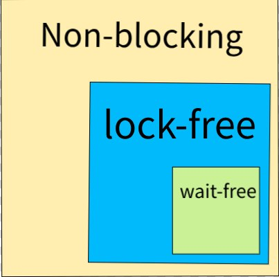

Разрабатывая свою игру, движок или фреймворк, вы в любом случае столкнетесь с необходимостью реализации системы загрузки ресурсов, выполнения задач вне основного цикла игры, вынесения различных подсистем (звук, рендер, физика, эффекты) в отдельные потоки, чтобы снизить время подготовки кадра и улучшить общую производительность. Будучи классическим программистом, вы, наверное, знаете о проблемах реализации многопоточности, использовании блокировок и алгоритмов, которые основаны на блокировках.
В обычном программировании с блокировками, когда возникает необходимость пошарить данные, приходится использовать механизмы сериализации доступа к таким данным, чтобы операции, выполняющие работу с такими данными, были ограничены от одновременного вмешательства со стороны других потоков и возможности их поломать. В прямом смысле поломать. Даже такая простая операция, как ++count, где count имеет тип integer, требует блокировки, поскольку операция инкремента в общем случае представляет собой трехшаговую операцию (чтение, модификация, запись), которая не является атомарной. Про что-то более сложное и длительное я уже и не говорю.
За кажущейся простотой скрывается множество граблей и ловушек: взаимные блокировки (deadlock), «голодание» потоков, асинхронные ошибки. Это похоже на попытку дирижировать оркестром, где музыканты игнорируют ритм. Проще говоря, любые действия над данными могут привести к проблемам, и чтобы этого не происходило, операции над данными должны быть атомарными, это решается вводом в код примитивов синхронизации, вроде мьютексов, семафоров, спинлоков.
Первая хорошая сторона программирования с блокировками состоит в том, что пока ресурс заблокирован, никакая другая логика не может вмешаться. Вторая хорошая сторона — люди прекрасно понимают, читают и работают с таким кодом, потому что он хорошо вписывается в "естественное" понимание устройства мира.
А вот дальше начинаются проблемы...
Это часть серии «Game++»:
Game++. run, thread, run... <=== Вы тут
Аналогии многопоточных алгоритмов в реальной жизни часто напоминают ситуации, где несколько людей взаимодействуют с общим ресурсом.
Ключ от комнаты:
Человеку, который хочет войти в комнату, требуется ключ, который висит на крючке у двери. Кто взял ключ, тот может работать в комнате. Остальные ждут у двери окончания работ. Это точно отражает работу мьютекса в коде.Очередь в магазине:
Кассир обслуживает одного покупателя за раз. Если клиенты начнут толкаться и лезть без очереди — возникнет хаос, будет гонка данных (race condition), и у кассира появятся ошибки. Очередь покупателей, в данном случае, выполняет роль синхронизации, позволяя обрабатывать их последовательно и избегать ошибок.Менеджер "над душой":
Пятница, конец рабочего дня. Менеджер Василий ожидает от вас завершения некоей задачи и каждые пять минут спрашивает: "А не закончил ли ты таску?", чтобы отметить её в недельном отчёте как закрытую и пойти с менеджером Ваней пить холодный кофе в пабе. Классический спинлок, на букву М, с постоянным временем ожидания.
Однако именно это "естественное понимание" возможных действий внутри заблокированной секции кода создаёт проблемы. Можно заблокировать некий общий ресурс — в случае разработки игр время фрейма тоже является общим ресурсом, причём очень и очень ограниченным — и начать долгую операцию, например, распаковку текстуры. Можно запустить операции ввода-вывода, которые уже сами по себе несут накладные расходы и содержат внутренние блокировки ОС или фреймворка, тем самым задерживая все остальные потоки.
Хуже всего, когда в попытках улучшить производительность игры мы приходим к ситуации взаимной блокировки (deadlock). Они в любом случае будут, как бы правильно вы ни спроектировали свой код. Чем больше мьютексов в приложении, тем выше шансы возникновения deadlock-ситуаций. И всё — никто никуда не едет, даже если полосы свободны.
Кроме всем понятного deadlock, который, кстати, может быть вызван несколькими причинами:
Mutual Exclusion (взаимное исключение): Ресурс может использоваться только одним потоком.
Hold and Wait (удержание и ожидание): Поток удерживает ресурс и ждёт другой.
No Preemption (отсутствие вытеснения): Ресурс нельзя отобрать у потока.
Circular Wait (циклическое ожидание): Цепочка потоков, каждый из которых ждёт ресурс от следующего.
Есть еще проблема инверсии приоритетов (Priority Inversion), когда низкоприоритетный поток или задача удерживает ресурс, необходимый высокоприоритетному, из-за чего тот не может выполняться. Это может привести к значительным задержкам и падению производительности. Как это было например в CP2077 с падением fps в толпе на релизе: помню, я долго боролся с этим багом, пока на одном из форумов не нашел мод, который просто снижал приоритет для навигации AI пешеходов, а то FPS проседал до 8, хотя в среднем держался стабильно выше 40
Архитектура RED4 довольно классическая для игровых движков, где потоки распределены следующим образом:
Главный поток: отвечает за логику игры, обработку физики, анимацию и обновление состояния мира.
Поток рендеринга: выполняет подготовку и отправку данных для видеокарты. Работает параллельно с главным потоком.
Рабочие потоки для тасок: используются для выполнения всех второстепенных, таких как ИИ NPC, трафик, загрузка ассетов, обновление навигационных данных и все остальное.
Потоки пешеходов и трафика активно использовали общие данные о позициях NPC и граф навигации. Как я понял из обсуждения на форуме, таски ИИ пешеходов несколько раз за фрейм обновляли позиции NPC, которые одновременно использовались потоком рендеринга для отрисовки. Эти данные защищались примитивами синхронизации. Если таска навигации надолго захватывала ресурс при расчёте сложного маршрута, рендеринг был вынужден ждать, что приводило к статтерам, микрозависаниям и резкому снижению частоты кадров. Особенно это проявлялось в районах с высокой плотностью NPC и сложной застройкой (например, рынок в районе Кабуки) FPS мог падать с 40 до 10, а игра «подфриживала» при резком повороте камеры, когда потоку рендеринга приходилось ожидать освобождения заблокированных данных, в то время как движок пытался пересчитать маршруты сразу для многих NPC, если игрок создавал затор или провоцировал толпу.
Проблема усугублялась тем, что в REDEngine основная логика игры, включая физику, анимацию и обработку событий, выполнялась в главном потоке, тогда как рендеринг и рабочие потоки работали параллельно. Из-за этого приоритет выполнения второстепенных задач начинал влиять на всё вокруг, приводя к каскадным задержкам (подробнее тут https://www.gdcvault.com/play/1020197/Landscape-Creation-and-Rendering-in и тут https://gdcvault.com/play/1034318/A-Ticket-to-Redemption-How). Это очень странно, потому что те же люди сделали прекрассный Witcher 3: Blood and Wine, где все это бегало, прыгало и не тормозило на заведомо более слабом железе (https://youtu.be/9vEfH9SJ9mY).
Эффект перегруженной очереди (Convoying) — замедление работы из-за того, что множество задач выстраиваются в очередь за общим ресурсом, даже если они не конфликтуют при выполнении. Реальный пример в Crysis — бочки.
Для обработки физики и эффектов взрывов в этом движке используется пул рабочих потоков. Но бочки используют один и тот же эффект, а сами инстансы эффектов хранятся в списках по типу эффекта, доступ к списку защищён мьютексом. Физика отрабатывает свои таски вполне сносно, даже на 500 бочках движок выдает приличный фпс, пока бочки не начинают взрываться и добавлять свои эффекты одновременно в этот список.
Хотя движок без заметной просадки обрабатывает сотни разных объёмных эффектов на сцене в обычной ситуации (дым, следы пуль и повреждения), он плохо справляется конкретно с такими сценариями. Т.е. воркеров много, но все они упираются в доступ к одному ресурсу, из-за чего возникает общая просадка производительности.
Но всё же, блокировки позволяют писать код намного проще — так, будто потоки работают последовательно. Это соответствует нашему естественному линейному мышлению, где каждое действие идёт одно за другим.
Мозг вообще плохо справляется с истинной параллельностью (как и код без синхронизации), и блокировки упрощают моделирование: «Сначала делай ты, потом я» — как в реальной жизни. Это снижает нагрузку при проектировании систем и делает логику более предсказуемым. Несмотря на общую понятность, современные игры требуют всё больше ресурсов и всё меньших задержек, особенно рендер и звук, для которых даже минимальные задержки чреваты десинком кадра, дёргами, глитчами, шипением звука, щелчками и другими прелестями десинка.
Например, если поток аудио-рендеринга блокируется на доступе к буферу звука или не успевает наполнять его, вы услышите характерное «щёлканье» или хрип, а если блокируется рендер, это приводит к визуальным артефактам (глитчам), микрофризам(статтерам).
Non-blocking logic
Тут на сцене появляется безлоковое (lock-free) программирование, которое обещает потенциально быстрые и безопасные примитивы и алгоритмы для многопоточных приложений. Работа таких алгоритмов возможна благодаря существованию некоторого набора атомарных примитивов, которые дают строгие гарантии о прогрессе потоков и их взаимодействии.
Этот набор примитивов весьма ограничен. В 2003 году Морис Херлихи защитил свою работу "Wait-Free Synchronization", опубликованную ещё в 1991 году, где показал, какие примитивы подходят для построения безлоковых структур данных, а какие нет. Это исследование стало фундаментом для последующих разработок Intel и AMD в области параллельных вычислений, что не только изменило подход к проектированию многопоточных систем, но и предопределило дальнейшее развитие аппаратных архитектур.
Также в своей работе он показал невозможность реализации некоторых операций для корректной синхронизации более чем двух потоков, например test-and-set, swap, fetch-and-add. Саму работу, думаю, вы сможете найти самостоятельно. Статья сложная — предупреждаю сразу, я не осилил все нюансы даже с помощью более опытных коллег.
Самым большим достижением, кмк, было доказательство универсальности некоторых простых примитивов, с помощью которых можно реализовать любой безлоковый алгоритм для любого количества потоков, которые потом в том или ином виде появились в большинстве языков. Самым простым и популярным примитивом, является операция Compare-and-Swap (CAS):
template <class T>
bool compare_and_swap(T* addr, T exp, T val) {
if (*addr == exp) {
*addr = val;
return true;
}
return false;
}Примитив сравнивает содержимое памяти по адресу addr с ожидаемым значением exp. Если значения совпадают, addr обновляется новым значением val. Вся операция (примитив) должна выполняться атомарно.
Но прежде чем двигаться дальше и рассказывать о применении всего этого богатства в разработке игр, хочу озвучить основное правило многопоточного программирования, которое сформировалось у меня:
Не используйтe lock-free без надобности
Вы мне, конечно, не поверите. Но, пройдя через опыт создания и портирования нескольких игр и движков с большим количеством параллельных задач, я могу дать один главный совет. Lock-free алгоритмы — это не столько серебряная пуля, сколько рискованная область с огромным количеством подводных камней. Они требуют глубокого понимания программирования в целом, многопоточного программирования в частности, а также хорошего знания аппаратных особенностей и устройства памяти.
Иногда лучше потерять миллисекунду на фрейме и поискать, где её можно нарыть в другом месте, чем иметь кучу невоспроизводимых багов. А ещё хуже — ловить редкие краши или графические глитчи, которые проявляются только на определённых конфигурациях железа, да ещё и через часы работы.
Но я всего лишь пишу статьи на Хабре и немного знаю плюсы. Может, кто-то из этих людей окажется более убедительным? 😊
Herb Sutter: "Lock-free programming is like playing with knives"
Tony Van Eerd: “Lock-free coding is the last thing you want to do”
Anthony Williams: “Lock-free programming is about how to faster shoot yourself in the foot“
До С++11
До одиннадцатого стандарта C++ не знал о существовании многозадачности и атомарных операций, как не было и модели памяти. У нас был "визуально" один поток управления с точками следования (sequence points) в коде программы, и задачей компилятора было создать такой код, чтобы к моменту нахождения потока выполнения в данной точке были видны все эффекты инструкций, выполненных до этой точки.
sequence points
Точки последовательности — это моменты в выполнении программы (например, конец выражения, вызов функции), где все побочные эффекты предыдущих операций гарантированно завершены, а последующие ещё не начались.
Представьте себе начало и конец функции — это две точки последовательности, до начала должны быть известны все значения аргументов, в конце должны быть известны результаты. Это если на пальцах объяснять. Но если вы вызываете функцию с двумя аргументами, стандарт C++ не гарантировал, какой из аргументов будет выполняться первым. Как компилятор пришел к текущему состоянию кода не определено. Причина проста: оператор запятая не является точкой последовательности. Это очень простой пример, который хз как работал, и такого кода в старых легаси проектах вагон с прицепом.
int x = 0;
int foo() {
x += 10;
return x;
}
int bar() {
x *= 2;
return x;
}
// Порядок вызова foo() и bar() не определён!
void print_values(int a, int b) {
printf("a = %d, b = %d, x = %d\n", a, b, x);
}
int main() {
x = 1;
print_values(foo(), bar()); // Результат зависит от компилятора!
return 0;
}Memory model
С приходом C++11 мы получили новую модель памяти. Модель памяти - это договор между программистом и компилятором + процессором, который позволяет программисту ограничивать возможности оптимизации программы до тех пор, пока правила не нарушаются. Если программист явно указывает, где нужна синхронизация (например, через задание порядка операций через memory_order_seq_cst), компилятор гарантирует порядок операций, как в последовательном коде. В хорошем случае мы получаем корректно работающую программу, которая неплохо оптимизирована.
В плохом, получаем что получаем. Если нарушить «договор» (например, использовать memory_order_relaxed там, где нужна строгая упорядоченность), оптимизации сломают логику. Нарушение «договора» ведёт к рассинхрону, который сложно отловить и гейзенбагам, исчезающим при попытке дебага.
Минутка для шутки (Что выведет этот код?)
void helloworld() {
printf("Hello world!");
}
int main() {
while (1) {
;
}
helloworld();
return 0;
}
void goodbyeworld() {
printf("Goodbye world!");
}(https://godbolt.org/z/h7WooW6PE)
К описанному выше это код не относится, но показывает что и компилятор проверять надо. Недавно отловили в релизе похожее поведение и были очень удивлены вызовом невызываемой функции.
Но чем меньше правил устанавливает программист, тем больше возможностей у компилятора создать хорошо оптимизированный бинарник. Мы вообще можем использовать очень слабые ограничения, читай модель памяти, тогда там есть масса вариантов оптимизации. Но кто сможет такую программу поддерживать и дебажить? Разве что очень умные программисты. А чтобы обычные программеры могли писать неглючные программы, умные программеры придумали ряд ограничений и правил. Ниже по списку идем от строгих к более мягким.
One control flow (один поток управления, strong, single threading)
В программе существует только один поток исполнения, поэтому нет необходимости в механизмах синхронизации. Память воспринимается последовательно: операции выполняются строго в том порядке, в котором они записаны в коде. Фактически нет накладных расходов на управление памятью в рамках одного процесса, самая простая модель памяти, если она вообще нужна.Tasks (задачи, strong, multi threading)
Задачи представляют собой единицы работы, которые могут выполняться параллельно (например, std::async в C++). Система (или библиотека) распределяет задачи между потоками, абстрагируя программиста от низкоуровневой работы с потоками напрямую. Данные локальны в рамках одной задачи, модель памяти простая как у single threadThreads (потоки, middle, multi threading)
Многопоточность подразумевает несколько независимых потоков выполнения кода в рамках одного процесса. Это даёт гибкость и возможность распараллеливания, но требует грамотного управления общими ресурсами и синхронизацией, чтобы избежать гонок данных и неопределённого поведения. Данные могут быть пошарены между тредами, модель памяти усложняется, так как требуется согласованность данных между потоками. Без специальных примитивов синхронизации или атомарных операций, изменения в одном потоке могут быть «невидимы» для другого.Condition variables (условные переменные, middle, multi threading)
Механизм, позволяющий потоку «заснуть» (заблокироваться) до тех пор, пока не будет выполнено определённое условие, о наступлении которого сигнализирует другой поток. Используются совместно с мьютексами для координации потоков и правильной последовательности выполнения.Sequential consistency (последовательная согласованность, soft, mt)
Самый строгий порядок. Все атомарные операции ведут себя так, будто они происходят в единой глобальной последовательности, согласованной со всеми потоками. Упрощает логику, но ограничивает оптимизации, компилятор выстраивает асм код так, как это написал программист.Acquire-release semantic (семантика «захвата-освобождения», soft, mt)
Менее строгий режим. «Захват» (acquire) гарантирует, что все операции до атомарной операции в текущем потоке видны, а «освобождение» (release) гарантирует, что все операции в текущем потоке не будут «обогнаны» операциями после освобождения. Это позволяет более тонко контролировать порядок и даёт возможность компилятору использовать дополнительные алгоритмы оптимизации по сравнению с sequential consistency.Relaxed semantic (упрощённая семантика, soft, mt)
Самый «свободный» режим. Гарантируется только атомарность самой операции, но не порядок относительно других операций. Это даёт максимальную свободу компилятору для оптимизаций, в том числе и для агрессивного реордеринга, векторизаций и удаления код, но усложняет понимание, поскольку операции могут быть переставлены по отношению друг к другу.
Модель памяти C++ была вдохновлена моделью памяти Java, как самой зрелой на момент разработки стандарта. С одной стороны, модель памяти С++ оставляет за программистом необходимость следить за гонками данных, если потоки совместно используют совместные данные. В этом плане задачи (tasks) гораздо проще в использовании, чем потоки или условные переменные. С другой стороны дает такие общепринятые решения как атомарные операции, возможность работать с потоками и гарантию того, когда результат операции над атомарным переменными станет виден в другом потоке.
Резюмируя
Чем меньше правил — тем эффективнее бинарник и больше багов:
Компилятор и процессор переставляют инструкции, объединяют их или даже удаляют «лишние», если это не нарушает видимого порядка операций (as-if rule).
Если переменная объявлена как memory_order_relaxed, компилятор может кэшировать её значение в регистре, не обновляя в памяти после каждой записи. Это ускоряет код, но требует глубокого понимания модели памяти.
Слабые ограничения = ад для разработчика:
Гейзенбаги: Ошибки, которые возникают только в продакшене, а при дебаге «испаряются» из-за изменения порядка инструкций.
Недетерминизм: Каждый запуск программы может вести себя по-разному, так как переупорядочивание зависит от процессора, ОС, нагрузки и позиции луны.
Для обычных смертных:
RAII и мьютексы — абстракции, которые скрывают сложность. Вызываете lock(), а под капотом компилятор расставляет барьеры памяти.
Атомарные переменные с дефолтными настройками (std::atomic<T>) — работают как memory_order_seq_cst, но это безопаснее, чем ручное управление.
В этом вся философия C++:
Дать программисту контроль над каждым битом, но не заставлять его этим пользоваться.
Хочешь скорость - пиши на «слабых» моделях и оптимизируй.
Хочешь спать спокойно - используй высокоуровневые примитивы.
Blocking, non-blocking, lock-free, wait-free

Каждый из этих терминов описывает характеристику алгоритма при выполнении в многопоточной среде. Поэтому, рассуждая о поведении программы во время выполнения, важно правильно классифицировать алгоритм.
Интуитивно довольно понятно, что означает блокировка для алгоритма. Однако многопоток — это не про интуицию. Самый простой способ определить блокировку — сделать это через инверсию неблокирующего поведения.
Неблокирующее поведение: алгоритм будет неблокирующим, если сбой или приостановка любого потока не может вызвать сбой или приостановку другого потока (что-то из университетского курса по алгоритмам). Вы можете заметить, что в этом определении нет ни слова о блокировках, потому что "неблокирующее" — более широкое понятие.
Заблокировать программу довольно просто. Типичный пример — использование нескольких мьютексов и их захват в разном порядке, примерно так люди ставят мьютексы в коде: поставил в одном, поставил в другом, понадеялся на луну. Достаточно неудачного стечения обстоятельств — и вот у вас уже взаимная блокировка (deadlock).
mutex entities_mutex;
int main(){
thread t([]{
cout << "Start updating ..." << endl;
lock_guard<mutex> _(entities_mutex);
cout << "Thread: " << this_thread::get_id() << endl;}
);
{
lock_guard<mutex> _(entities_mutex);
cout << "Update entities: " << this_thread::get_id() << endl;
t.join();
}
}Основные категории неблокирующих алгоритмов — это lock-free (без блокировок) и wait-free (без ожидания). Любой wait-free алгоритм является lock-free, а любой lock-free — неблокирующим (non-blocking). Однако non-blocking и lock-free — это не одно и то же.
Существует еще одна категория, называемая obstruction-free (без препятствий), которое гарантирует, что если какой-либо поток начнет выполнять операцию и в определенный момент времени будет работать без вмешательства других потоков (например другие потоки приостановлены), то этот поток завершит операцию за конечное число шагов. Однако, если другие потоки активно мешают, операция может не завершиться или потребовать повторных попыток.
Сериальная секция в конце или начале фрейма
Сериальная секция фрейма — этап обработки кадра, где выполняется последовательный (строго непараллельный) код, необходимый для завершения текущего кадра и подготовки к следующему. Эта часть конвейера игрового фрейма часто становится узким местом для производительности, так как требует синхронизации данных и работы с API, которые не поддерживают параллелизм. Гарантии движка по свойству obstruction-free позволяет выполнять здесь операции без оглядки на разные блокировки, потому что подготовка данных для фрейма закончена, и выполняется лишь малая часть логики, которая не может быть распарллелена. Например фиксирование ресурсов, сдвиг счетчиков, комитирование параметров подсистем.
Unity: В конце кадра главный поток выполняет LateUpdate, отправку команд в GPU, подготовку шейдеров для последующей компиляции, подготовку очереди распаковки ресурсов и обновление навигации.
Unreal Engine: Сериальная секция включает этап «RHI Commit», где данные передаются в графический API.
СryEngine: Сериальная секция включает этап «RTG Finalize» и подготовку данных для видеокарты, сбор телеметрии подсистем и удаление протухших объектов (GC, объекты еще не удалены и содержат данные, но пользоваться ими нельзя).
Lock-free: Неблокирующее поведение является lock-free, если гарантирует системный прогресс (по крайней мере один поток завершит свою работу за конечное время).
Wait-free: Неблокирующее поведение является wait-free, если гарантирует прогресс для каждого потока, т.е. любой поток завершит свою работу за конечное время, независимо от других потоков.
Про сами алгоритмы и контейнеры, наверное, будет отдельной статьей, если кому-то интересно их применение в игровых движках, слишком много материала получается. Из того, с чем приходилось работать и реализовывать:
Stack: Реализуется с использованием односвязного списка и атомарной операции (CAS) для обновления указателя на хед стека. (Writing lock-free stack, Lock-free stack)
Queue по Michael-Scott, что использует CAS для обновления указателей хед и тейла.
(Paper, Article, Github, Github)Hash Table реализуется как массив указателей на lock-free списки.
Linked List, в моем случае несколько реализаций по Харрису, использующих CAS для атомарного обновления указателей.
(Paper, Github, Github, Article)Vector, динамический массив, не помню уже за чьим авторством
Snapshot, позволяет нескольким потокам одновременно читать и записывать набор общих переменных.
(Paper, Paper)Hazard pointers, для безопасного освобождения памяти в многопоточной среде.
(Paper, Paper, Github)Атомики, Compare-And-Swap (CAS), Fetch-And-Add (FAA), Load-Linked/Store-Conditional (LL/SC) как базовые примитивы для реализации всего вышеописанного добра
Зачем куда-то уходить от мьютексов?
Люди часто описывают lock-free-программирование, как программирование без мьютексов и других тяжелых блокировок, часто подразумевая под этим некоторые сложные структуры вроде циклических буферов, или lock-free очередей, вроде тех, что были описаны в предыдущем абзаце. Это верно, но это лишь часть картины. Общепринятое определение несколько шире: по сути, lock-free — это свойство, которым можно охарактеризовать некоторый код или логику, не вдаваясь при этом в детали того, как именно он был написан.
Lock-free ≠ «быстрее блокировок». Это гарантия, что хотя бы один поток всегда продвигается вперёд, даже если другие «застряли». Это как вождение без тормозов:
Можно ехать быстро, очень быстро, но нужны идеальные дороги (железо) и реакция (алгоритмы).
Один неверный поворот (ошибка в коде) — и вы в канаве (краш, рассинхрон).
Оно вам точно надо?!
Например, у меня есть некий ресурс, который я хочу использовать в тредах.
int counter = 0;
std::mutex counter_mutex;
void increment() {
for (int i = 0; i < 1000; ++i) {
std::lock_guard<std::mutex> lock(counter_mutex);
++counter;
}
}
int main() {
std::vector<std::thread> threads;
for (int i = 0; i < 10; ++i) {
threads.emplace_back(increment);
}
for (auto& t : threads) {
t.join();
}
}И вот я вижу, что мой условный ресурс может быть преобразован так, чтобы избавиться от мьютекса.
std::atomic<int> counter{0};
void increment() {
for (int i = 0; i < 1000; ++i) {
counter.fetch_add(1, std::memory_order_relaxed);
}
}
int main() {
std::vector<std::thread> threads;
for (int i = 0; i < 10; ++i) {
threads.emplace_back(increment);
}
for (auto& t : threads) {
t.join();
}
}std::atomic<int> — позволяет делать операции над переменной counter атомарно, исключая гонки данных. fetch_add(1, std::memory_order_relaxed) увеличивает значение счетчика без блокировок. Здесь используется memory_order_relaxed, строгий порядок между потоками не требуется. Это тоже lock-free программирование, там, где нужно вам, без использования мьютексов и ГМО. И вот о таком lock-free программировании часто забывают в пользу больших и сложных, действительно сложных реализаций.
А это, наверное, даже важнее: видеть возможность применения этой логики, чем умение написать circular-buffer и пробовать его впихнуть в проект, особенно если он там не нужен, а надо правильно развести счетчики, таски, переменные.
Атомарные операции
Это операции с памятью, которые выполняются так, что выглядят неделимыми: ни один поток не может увидеть операцию в наполовину завершённом состоянии. На современных процессорах многие операции уже являются атомарными. Например, выровненные чтение и запись простых типов данных, как правило, выполняются атомарно.
Операции "чтение-модификация-запись" (Read-Modify-Write, RMW) идут дальше, позволяя выполнять более сложные транзакции атомарно. Они особенно полезны в безлоковых алгоритмах с несколькими потоками записи, поскольку при попытке нескольких потоков выполнить RMW на одном и том же адресе эти операции будут выполняться по очереди, одна за другой. С++ представляет нам такую реализацию через std::atomic<T>::fetch_add , но стоит помнить, что стандарт не гарантирует безлоковую реализацию атомарных операций на всех платформах. Поэтому стоит учитывать возможности конкретного процессора. Можно проверить, поддерживает ли std::atomic<> безлоковую реализацию, вызвав std::atomic<>::is_lock_free.
std::atomic_flag — это единственный безлоковый атомарный примитив, реализация которого гарантируется стандартом. Остальные, более мощные и общие примитивы могут реализовывать свою функциональность с использованием других примитивов, поэтому у них есть метод is_lock_free(), позволяющий проверить, используется ли атомарная операция внутри или задействована другая реализация.
atomic_flag примитива достаточно для построения простейшего спинлока. Среди различных примитивов синхронизации занимает особое место — он сочетает простоту реализации и наилучшую производительность в специфических сценариях, по сравнению со всеми другими реализациями.
struct spinlock_t{
atomic_flag flag;
spinlock_t(): flag(ATOMIC_FLAG_INIT) {
}
void lock(){
while( flag.test_and_set() );
}
void unlock(){
flag.clear();
}
};В отличие от классических блокировок на основе мьютексов, которые при невозможности захвата ресурса переключают поток в состояние ожидания (с приостановкой и передачей управления планировщику ОС), спинлок реализует стратегию активного ожидания. Поток, пытающийся захватить блокировку, непрерывно опрашивает состояние в цикле, не освобождая процессорное время. Такой подход исключает накладные расходы на переключение контекста, что зачастую критически важно в высоконагруженных сценариях. Однако эффективность применения спинлока напрямую зависит от того, где он используется.
Это не замена мьютекса, как многие могли бы подумать. Область применения - это ресурсы, время удержания которых, сравнимо со временем блокировки мьютекса, которое может достигать тысяч циклов CPU или больше. При длительных операциях под спинлоком активное ожидание приводит к бесполезному расходованию CPU, что выходит дороже использования мьютекса, или к эффекту "голодания" потоков.
Thread starvation
Cитуация в многозадачной системе, когда один или несколько потоков не получают достаточно времени CPU для выполнения своей работы. Происходит по разным причинам, особенно часто проявляются при использованиии приоритетов, которые мешают нормальной работе планировщика.
Низкий приоритет потока: низкий приоритет мешает выделению слота времени, потоки с высоким приоритетом получают больше слотов, при большом числе высоко-приоритетных потоков, остальные не получают слотов вообще. Эффект Priority inversion.
Неэффективная синхронизация: В случае неправильной синхронизации потоков (например, если один поток постоянно захватывает мьютекс или другой ресурс), другие потоки постоянно блокируются, что приводит к их голоданию. Эффект Lock contention
Долгий захват ресурсов: Потоки, которые захватывают ресурсы могут не отпускать их долгое время, что создаёт ситуацию, при которой другие потоки не могут продолжить выполнение. Эффект Resource contention.
Алгоритмическое голодание: Если в программе используется алгоритм, который по каким-то причинам не даёт равного доступа всем потокам (например, алгоритм с предсказуемым циклом обслуживания, где одни потоки всегда обслуживаются раньше других). Эффект
Fairness issue, условно можно написать такой спинлок, который будет раньше других забирать блокировку, что приводит к приоритезации определенных потоков.
Я уже описывал потенциальные проблемы при реализации разных алгоритмов ожидания в спинлоке (https://habr.com/ru/articles/689310/). Из разных вариантов в итоге пришел к использованию схемы с псевдо-рандомным ожиданием, которая хорошо себя показывает в большинстве кейсов.
struct spin_lock_t {
enum {
SPIN_LOCK_FREE = 0,
SPIN_LOCK_TAKEN = -1
};
volatile int _lock;
inline void lock () noexcept {
for (;;) {
// Optimistically assume the lock is free on the first try
if (!cmpxchg(_lock, SPIN_LOCK_TAKEN, SPIN_LOCK_FREE)) {
break;
}
// Wait for lock to be released without generating cache misses
uint8_t wait = 1;
while (SPIN_LOCK_FREE != load(&_lock)) {
wait *= 2; // exponential backoff if can't get lock
#if (defined(__PROSPERO__) || defined(_GAMING_XBOX))
// hardware wait on address when value changes
_mm_monitorx((void *)&_lock, 0, 0);
_mm_waitx(0, 0, wait);
#else
for (u8 i = 0; i < wait; i++)
__mm_pause();
#endif
wait += (wait ? 0 : 1);
}
}
}
inline void unlock () noexcept {
_lock = SPIN_LOCK_FREE;
}
inline bool trylock () noexcept {
// First do a relaxed load to check if lock is free in order to prevent
// cache misses if someone does while(!try_lock())
if ((SPIN_LOCK_FREE == load(&_lock))
&& (SPIN_LOCK_FREE == cmpxchg(_lock, SPIN_LOCK_TAKEN, SPIN_LOCK_FREE)) ) {
return (true);
} else {
return (false);
}
}
// just debug check
inline bool locked () const noexcept {
return (SPIN_LOCK_FREE != _lock);
}
inline spin_lock_t(pcstr = 0) noexcept : _lock(SPIN_LOCK_FREE) {}
inline ~spin_lock_t() noexcept {}
};Там есть небольшое различие для консолей, инструкция __mm_monitorx((void *)&_lock, 0, 0) подготавливает ядро к переходу в режим ожидания, сообщая ему, за каким адресом в памяти он должен следить. Затем ожидаем изменений на этом адресе, либо истечения таймаута. Это снижает избыточное использование CPU при активном ожидании (spin-wait), и ядро может не тратить время на бесконечное опрашивание переменной в цикле. Эта инструкция не всегда доступна на CPU, поэтому это блок кода реализован только для консолей, а для пк сделан более универсальный код.
Бывает, что использование мьютекса/спинлока не вписывается в алгоритм, или есть желание наоборот уйти от их использования. Так std::atomic<bool> предлагает возможность эмулировать условные переменные с помощью атомиков. Этого часто достаточно для синхронизации двух потоков. Такой код:
vector<int> player_actions;
mutex action_mutex;
condition_variable action_cond;
bool is_action_ready;
void waiting_actions(){
cout << "Waiting for player action..." << endl;
unique_lock<mutex> lck(action_mutex);
action_cond.wait(lck,[]{return is_action_ready;});
player_actions[1] = 2; // Пример выполнения действия
cout << "Action completed!" << endl;
}
void set_player_action(){
player_actions = {1, 0, 3}; // Пример задания действий игрока
{
lock_guard<std::mutex> lck(actionMutex);
is_action_ready = true;
}
cout << "Player actions set!" << endl;
action_cond.notify_one();
}Если запускать этот код из разных потоков, то waiting_actions ожидает наступления события action_condдля продолжения работы, но использует мьютекс, блокировка/разблокировка, которого занимает значительное время по сравнению с самой работой. Это конечно не настоящий пример, но представьте, что вам надо вычитывать состояния контроллера в потоке обработки инпута.
Если переписать этот код с помощью атомиков, он превращается в:
vector<int> player_actions;
atomic<bool> actions_ready(false);
void waiting_actions(){
cout << "Waiting for player action..." << endl;
while ( !actions_ready.load() ){ // (C)
this_thread::sleep_for(chrono::milliseconds(5));
}
player_actions[1] = 2; // (D)
cout << "Action completed!" << endl;
}
void set_player_action(){
player_actions = {1,0,3}; // (A)
actions_ready = true; // (B)
cout << "Player actions set!" << endl;
}Добавилось активное ожидание в C.
Что гарантирует, что строка D будет выполнена после строки C? Из-за атомарной переменной actions_ready доступ к общей переменной player_actions синхронизирован, поток waiting_actions не увидит изменений, пока actions_ready не изменится, несмотря на то, что player_actions не защищён блокировкой и не является атомарным.
В современных плюсах атомарные типы добавлены для всех известных целочисленных типов.
Когда это НЕ стоит использовать?
Требуется более сложная синхронизация, например, ожидание множества событий.
Потоки редко взаимодействуют,
condition_variableбудет более эффективным с точки зрения числа выполняемой работы, время CPU будет использовано для реальной задачи, а не на ожидание.При высокой конкуренции между потоками, активное ожидание (spin-wait) приводит к ненужной загрузке процессора и в итоге к меньшей выполняемой работе.
Tasks
Новые стандарты все больше упрощают многопоточное программирование для "обычного" разработчика, но при этом оставляют огромный потенциал для оптимизации как со стороны компилятора, так и со стороны экспертов. thread, async, mutex, condition_variable, и atomic, позволяют писать эффективный многопоточный код, не вникая в детали низкоуровневой синхронизации.
Чтобы заниматься многопоточностью в плюсах сейчас, уже не нужно быть экспертом — большую часть сделает компилятор, проанализирует зависимости, расставит барьеры памяти, устранит ложные зависимости и даже распараллелит код на уровне инструкций. Главное не сильно мешать ему в этом. Zero-cost abstractions в действии!
Шучу, конечно — всегда надо понимать, что пишешь. Даже высокоуровневые механизмы могут скрывать баги и нюансы, вроде ложного пробуждения (spurious wakeup), накладные расходы на переключение контекста или false sharing данных. Настоящая магия в том, что современные плюсы позволяют работать на удобном уровне абстракции, не теряя контроля над производительностью, если это необходимо.
void doWork() {
// ... long works
std::cout << "Thread works: " << std::this_thread::get_id() << std::endl;
}
std::thread t1(doWork);
std::thread t2(doWork);
t1.join();
t2.join();Этого уже достаточно, чтобы реализовать мультипоточную обработку в движке, не особо задумываясь как оно работает под капотом. Это та самая Tasks система, со строгой моделью памяти, которая требует минимальных знаний для работы. Случаи чуть посложнее с одновременным доступом, чинятся использованием mutex'a в нужном месте.
Такой порядок работы с потоками устраивает многих. Что в этом подходе плохо, так это расходы на запуск потока. Создание и запуск потока могут занимать от нескольких десятков микросекунд до нескольких сотен микросекунд, а в отдельных случаях при высокой нагрузке это время может доходить до нескольких миллисекунд, что зачастую сравнимо с временем выполнения задачи.
Thread pool
Именно из-за этих ненулевых накладных расходов создание потоков во время подготовки фрейма малоприменимо, что привело к появлению пула потоков (thread pools), который позволяет один раз создать нужное количество тредов и затем многократно переиспользовать их для выполнения задач, избегая тем самым лишних затрат на запуск и завершение потоков. Потоки в пуле остаются в режиме ожидания, пока им не будет передана новая задача, что значительно повышает эффективность работы с ними.
Пример, наверное, уже ставшей классической реализации пула потоков: (https://github.com/progschj/ThreadPool)
class Pool {
public:
Pool(size_t) { ... }
~Pool() { ... }
template<class F, class... Args>
future<typename result_of<F(Args...)>::type>
enqueue(F&& f, Args&&... args) {
using return_type = typename result_of<F(Args...)>::type;
auto task = make_shared<packaged_task<return_type()> >(
bind(forward<F>(f), forward<Args>(args)...)
);
future<return_type> res = task->get_future();
unique_lock<std::mutex> lock(queue_mutex);
tasks.emplace([task](){
(*task)();
});
}
condition.notify_one();
return res;
}
private:
vector<thread> workers;
queue<function<void()>> tasks;
mutex m;
condition_variable cv;
bool stop;
};
int main() {
Pool pool(4);
vector< future<int> > results;
for(int i = 0; i < 8; ++i) {
results.emplace_back(
pool.enqueue([i] {
cout << "hello " << i << endl;
this_thread::sleep_for(chrono::seconds(1));
cout << "world " << i << endl;
return i*i;
})
);
}
}Со временем игры и игровые движки пришли к тому, что в системе фактически нет "основного" потока, а есть только множество задач. MainThread, конечно, существует, но его функции сейчас сводятся к ожиданию воркеров, распределению задач (tasks) и подготовке к смене кадра. Вместо того чтобы напрямую выполнять GameUpdate(), основной поток скорее организует выполнение множества независимых задач, которые параллельно завершают обработку текущего кадра.
Такая система имеет большое преимущество перед классической схемой GameUpdate() по многим причинам. Например, если один воркер будет вытеснен (например, внешний процесс захватит это ядро), другие воркеры просто возьмут на себя его задачи, и не будет задержек из-за ожидания конкретного потока. Это снижает вероятность резких просадок FPS и кратковременного растягивания времени фрейма (hitching), особенно в условиях высокой нагрузки.
Hitching
Т.е. все фреймы укладываются в 16 мс, но некоторые выбиваются из этого времени, оно вроде незаметно для игрока, но наличие нескольких таких фреймов в секундном интервале приводит к тому, что картинка "плавает", либо "дерганная" при большом времени фрейма.
Hitching
Это кратковременные, но заметные задержки (фризы) во время работы игры, которые вызывают резкие изменения в плавности анимаций, управление начинает ощущаться дергано либо плаваюищим, а частота кадров проседает, а затем приходит в норму.
На графиках перфа hitch (или frame hitch) выглядит как один или несколько кадров с резко увеличенным временем обработки по сравнению с соседними кадрами. Например, если игра стабильно работает при 16 мс на кадр (60 FPS), а затем один или несколько кадров занимает 20 или больше мс, что игрок заметит как hitch, неявный фриз.
Hitching даже более раздражающий, чем стабильные 30 FPS, потому что резкие скачки в плавности или плавающиее управление нарушают предсказуемость игры.
I/O hitching
Длительные операции чтения с диска, загрузка текстур, моделей или анимаций во время игры.
Игрок заходит в новую область, и игра подгружает текстуры. Если это происходит синхронно (в игровом потоке), кадр может подвиснуть.
В открытых мирах streaming контента (подгрузка данных по мере движения игрока) может вызывать hitching, если игра плохо оптимизирована для работы с большим числом ресурсов
Старые SSD/HDD особенно подвержены такому, так как время доступа к данным выше, чем у современных
Threading hitching
Непредсказуемая нагрузка на процессор, например, когда один поток выполняет слишком сложную задачу, а остальные простаивают.
Движок не использует job system или неравномерно распределяет задачи между ядрами, могут возникать моменты, когда один поток блокирует выполнение остальных.
Прерывания (например, внезапный сброс кеша процессора или работа антивируса и других тяжелых приложений в фоне)
GC Hitching
В система со сборкой мусора (C#, Lua) очистка памяти может происходить внезапно и заблокировать нормельную работу.
В Unity/Godot встречаются GC hitches, когда накапливаются временные объекты, а затем их удаление вызывает фриз.
В движках со скриптовыми VM (WoW, Roblox) резкие фризы могут происходить из-за того, что GC очищает память, и не успевает это сделать до следующего фрейма и задерживает его.
Graphics Hitching
Непредсказуемые задержки в работе видеокарты.
Игра отправляет GPU слишком много команд за один кадр, процессор может вынужден ждать завершения их обработки (GPU stall).
Сложные эффекты (например, тесселяция, ray tracing, большое количество частиц) могут перегрузить видеокарту.
Изменение состояния рендеринга (переключение между разными render passes, текстурами, материалами) может вызывать тормоза.
При первом запуске сложных эффектов игра может компилировать шейдеры на лету, что приводит к просадкам
Workers
Современные игровые движки используют пул потоков, где на Н-ядер процессора выделяется по рабочему потоку, реже два, будем называть их воркеры. Все воркеры выполняют задачи и являются полностью взаимозаменяемыми — нет жесткой привязки потока к конкретной задаче. Исключение может быть сделано для потоков рендера, физики, звука и внешних устройств, но даже они могут быть интегрированы в парадигму задач.
Схема "один поток на ядро"
Отсутствие конкуренции за ресурсы — если каждому ядру выделен только один поток, ОС не будет переключаться между ними, не будет потерь на context switch (переключение контекста).
Максимальная загрузка процессора — все ядра равномерно загружены и работают с максимальной эффективностью.
Предсказуемая производительность — если у движка 16 потоков на 16 ядрах, он всегда может гарантированно выполнить 16 задач одновременно.
Схема "два потока на ядро"
Задачи не полностью нагружают CPU (например, есть много легковесных вычислений, ожиданий).
Потоки часто блокируются, например, ждут I/O-операции или данных от GPU.
Отдельные потоки для работы с внешними устройствами, которые могут заблокироваться (ввод-вывод, GPU, звук), необходимы, потому что их API часто разрабатывались без учета многопоточности. Потребуется отдельный поток для каждого устройства, чтобы обернуть неудачные API и предоставить интерфейс для воркеров игры. В результате задачи ввода-вывода с устройств просто ставятся в очередь, а затем воркеру передается дескриптор задачи (task handle), с помощью которого можно запросить результаты или завершение операции.
По коду, это будет напоминать пул потоков, по сути это он же и есть, но тут уже можно баловаться с приоритетами задач, самих потоков и больше адаптировать логику работы самого пула под движок. Например сделать long-live задачи, которые могут быть приостановлены на момент фиксации фрейма, и затем продолжены, т.к. движок не обязательно должен дожидаться их завершения на текущем фрейме.
К сожалению, большинство сторонних API не являются по-настоящему асинхронными. Например, многие графические API, несмотря на наличие командных буферов, в реальности вызывают блокировки, особенно при работе с VRAM. Платформы вроде Nintendo NX продвигают полностью асинхронные API, но что-то народ не очень активно его юзает.
Game update и Last frame data
Однако за бОльшую свободу приходится расплачиваться бОльшими проблемами. Как управлять блокировкой игровых объектов, чтобы не морозить весь мир? Что произойдет, если нескольким потокам потребуется доступ к одному объекту для его изменения?
Концептуально самым простым решением является блокировка на уровне "игрового объекта". То есть каждый объект может быть заблокирован для изменений одним потоком, а остальные потоки будут вынуждены ждать. Это не всегда хорошо с точки зрения производительности, но такой подход понятен и прост для реализации.
Очевидно, что нужен какой-то тип блокировки "чтение/запись", потому что большинство объектов читаются гораздо чаще, чем пишутся. В идеальной ситуации каждый объект обновляет только себя (он может читать другие объекты, но записывает только себя), и у вас есть полная параллельность. Это не всегда возможно, нужно обрабатывать обновления между объектами и циклы; например, A записывает A и также записывает B, B записывает B и также записывает A — это может привести к взаимной блокировке.
Итак, все игровые объекты ссылаются через слабые ссылки в виде непрозрачных дескрипторов или индексы. Чтобы прочитать один из них, надо сделать что-то вроде:
const GameObject * read_lock(GameHandle h)read_lock увеличивает счетчик ссылок на копию объекта, чтобы версия, которую я читаю, оставалась доступной, даже если write_lock заменит её на новую. Существует несколько способов реализации блокировки на запись. В любом случае, write_lock берет локальную копию объекта и возвращает на неё указатель. Таким образом, read_lock могут продолжаться без блокировки — они просто получают старое состояние. Это нормально, если чтения получают данные, запаздывающие на один кадр, в современных играх почти все данные объектов запаздывают на один-два фрейма. Очень редкие случаи, когда нужны действительно актуальные данные об объекте, решаются их реализацией через getter"ы и атомарные переменные.
В итоге получаем, что условный write_unlock просто заменяет объект в таблице на локальную копию. А read_lock , которые уже были в процессе выполнения, продолжают ссылаться на старые данные, но все последующие read_lock и write_lock будут получать новую версию объекта. Чтобы еще уменьшить возможные проблемы, смещаем точку апдейта ближе к концу фрейма.
Но для такой системы обычные мьютексы и спинлоки не подходят, потому что будут приводить к значительным задержкам в работе. Нужен некий примитив синхронизации, который бы не блокировал объект на чтении. И он появился - его назвали Read-Write Mutex. Ниже приведена простейшая схема rw_mutex'a, реализованная через спинлок.
struct rw_mutex {
public:
spin_lock_t lock;
volatile int readers;
void cpu_relax() { __mm_pause(); };
explicit rw_mutex_lw (pcstr) : readers(0) {}
void acquire_write()
{
/* Get write lock */
lock.lock();
/* Wait for readers to finish */
while (readers)
cpu_relax();
}
void release_write() { lock.unlock(); }
void acquire_read()
{
while (1)
{
/* Speculatively take read lock */
atomic_inc(&readers);
/* Success? */
if (!lock._lock){
return;
}
/* Failure - undo, and wait until we can try again */
atomic_dec(&readers);
while (lock._lock)
cpu_relax();
}
}
void release_read()
{
dec(&readers);
}
};
struct read_locker_lw {
read_locker_lw(rw_mutex_lw &lock) : _lock(lock) { _lock.acquire_read(); }
~read_locker_lw() { _lock.release_read(); }
rw_mutex_lw &_lock;
read_locker_lw(const read_locker_lw &);
void operator =(const read_locker_lw &);
};
struct write_locker_lw {
write_locker_lw(rw_mutex_lw &lock) : _lock(lock) { _lock.acquire_write(); }
~write_locker_lw() { _lock.release_write(); }
rw_mutex_lw &_lock;
write_locker_lw(const write_locker_lw &);
void operator =(const write_locker_lw &);
};Ну как? Не сильно я вас утомил очередными кишочками игростроя?
Хороший дизайн многопоточности в играх
Закончить эту статью хочу несколькими правилами, как должна использоваться многопоточность в играх и что делает дизайн многопоточности хорошим или плохим в целом. Изложу несколько принципов хорошей многопоточности в играх, опробованных на собственном опыте, и объясню, почему именно они.
Игры находятся в своеобразной промежуточной зоне: они не являются по-настоящему системами "реального времени", такие системы практически никогда не позволяет переключаться между потоками. Но относятся к категории "высокопроизводительных вычислений", причем той её части, что ориентирована на максимальную пропускную способность, а не на минимальную задержку, и при этом забирают под себя всю машину, до которой смогут дотянуться, что характерно больше под РТОС и различные системы управления. Игры также не являются обычными приложениями, которые могут терпеть длительные простои процессора. В результате, разработчикам приходится решать как быть и умными и красивыми одновременно.
1. Потоки не должны засыпать, когда им нечего делать
Игры используют рабочие потоки, которые постоянно крутятся в цикле (spinning), выполняя очередь задач. Это позволяет им гарантировать задержки в пределах нескольких сотен тактов процессора при активизации этого потока. Игры всегда работают в системе, которой нужно делить ресурсы, в целом для ОС игра - такое же приложение как браузер и калькулятор. На ПК могут выполняться другие приложения, которые могут приводить к переключению контекста, в большинстве случаев это негативно сказывается на перфе игры, чтобы избежать этого - надо постоянно держать поток нагруженным.
2. Никогда не используйте Sleep(n)
🔴 Вообще. Никогда. Нигде. Даже в spin-петлях.
Некоторые статьи советуют использовать экспоненциальный backoff (Sleep(n), YieldThread() и т. д.), но для игр это порочная практика, которая убивает перф похлеще аллокаций. Даже Sleep(1) - это около 1 миллисекунды, что является целой вечностью в игровой логике. Если Sleep() находится на критической функции рендеринга, он может легко добавить миллисекунду и больше ко времени кадра. Но хуже даже не эта потеря времени, Sleep отправляет тред планировщику, и когда тот решит вернуть управление известно только луне.
3. Все ожидания (Wait) должны работать через OS-события (семафоры и т. д.)
Если используется засыпание потока, то он должен просыпаться по событию, а не по таймеру. Если поток просыпается "просто так", он тратит 10 000+ тактов на переключение контекста.
4. Переключения потоков — это проблема
Дэдлоки и гонки данных это просто баги, их можно найти и исправить. Чтобы исправить переключение потоков (косвенными видимыми симптомами являются снижение фпс, статтеры, дерги, фризы и глитчи), надо очень хорошо знать движок, более того - надо знать где ударить молотком, а такие спецы на рынке долго свободными не задерживаются. Просто помните, что взятие мьютекса ≈ 200+ тактов, переключение потока > 10 000 тактов.
Притча про молоток
Однажды на одной из английских фабрик вышел из строя паровой генератор. Каких только специалистов не приглашал фабрикант, но никто не смог его починить. И вот однажды пришел незнакомый человек и сказал, что может починить генератор. Фабрикант удивился, но решил дать мастеру шанс.
Аккуратно и методично тот начал простукивать различные участки машины, внимательно прислушиваясь к звукам, которые издавала металлическая поверхность. За десять минут он простучал датчики давления, термостаты, подшипники и соединения, где, как он предполагал, находится повреждение. Затем он подошёл к одному из коленчатых соединений и нанёс несильный удар молотком. Эффект был мгновенным. Что-то сдвинулось, и паровой генератор заработал.
Фабрикант долго благодарил мастера, и попросил его прислать счет, где были бы расписаны все виды работ.
Вот что было написано в счете:
За десять минут простукивания - 1 фунт.
За знание того, куда нужно ударить - 9999 фунтов. Итого: 10000 фунтов.
Мораль: профессионализм - это не умение ударить, а умение ударить именно туда, куда нужно.
5. Ложные пробуждения ("spurious wakeups") убивают перф
Если поток просыпается, проверяет условие и снова засыпает, то потрачено 10 000 тактов впустую. Потоки не должны просыпаться просто так, а должны ждать по конкретному условию.
6. Лучше пожертвовать эффективностью задач, но избежать переключения
Если задача очень маленькая, можно выполнять её сразу в вызывающем потоке или воркере. Пакеты задач выполняются эффективнее чем одна. Приоритеты задач работают намного эффективнее пакетов.
🔴 Плохой сценарий (это катастрофа из-за постоянных переключений): очередь задач (SPCS queue) на семафорах
Главный поток кладёт задачу в очередь
Рабочий поток просыпается, выполняет задачу, засыпает
Главный поток кладёт новую задачу
Рабочий поток снова просыпается... и так далее
7. Мьютексы вызывают ненужные переключения потоков
Проблема мьютексов не в том, что они "медленные" (200+ тактов – это не страшно), а в том, что при блокировке они заставляют поток переключаться. Лучшим решением будут Spinlock + backoff механизмы, если время ожидания короткое и Lock-free очереди, если есть частая конкуренция за ресурс или время ожидания планируется более затратное чем ожидание на спинлоке.
🔴 Плохой сценарий: очередь для частых задач с мьютексом
Поток хочет записать задачу → блокировка
Поток выходит из выполнения, пока мьютекс занят
Поток, который владеет мьютексом, завершает работу → разблокировка
ОС переключает контекст обратно на первый поток
8. Избыточное количество потоков вредно
Чем больше потоков, тем больше переключений. Хорошая архитектура игры и движка задействует меньше потоков чем ядер для всех подсистем игры. Можно делать исключения, если потоки ждут IO устройств, или уникальных подсистем вроде рендеринга, коллизий, частиц. В играх не нужно принудительное чередование потоков, надо максимально загрузить то, что есть. Один поток на задачу – плохо, вы получите только излишние переключения. Один поток на ядро – хорошо.
← Все статьи